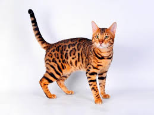

Бенгальський кіт
Бенгальський кіт виведений шляхом схрещування домашнього кота з леопардовим азійським котом. У нього яскраве «леопардове» забарвлення, що робить цю породу дуже екзотичною на вигляд.
Бенгали дуже активні, грайливі та розумні. Вони люблять воду, часто більш допитливі, ніж інші породи, та потребують іграшок і зайнятості, щоб не нудьгувати.